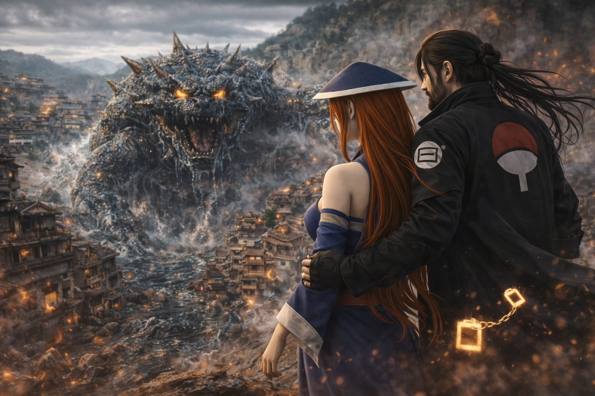

Kirigakure no Sato · Registro de Batalha · Rank S
UchiHyuuga Kurosaki Nero · Contra o Sanbi · A Batalha de Kirigakure
"Ele chegou sozinho.
Não havia plano. Não havia reforços.
Havia apenas Nero — e a decisão de que
a Vila da Névoa não cairia naquele dia."
Era um dia comum nas termas perto da casa de Mei Terumi — um pouco afastada da vila, onde o mundo ainda parecia quieto. Nero estava lá. O que viera como visita se tornaria, em minutos, a batalha mais brutal que Kirigakure jamais testemunhou dentro de seus próprios muros.
O rugido chegou primeiro. Um som que não era de nenhum animal mortal — grave, úmido, violento — que fez vibrar o chão, as águas termais e os ossos de quem estava próximo. O Sanbi havia se libertado.
Nero olhou na direção da vila. Olhou para Mei. Disse apenas uma coisa:
"Protege os civis."
E usou o Hiraishin para desaparecer em fração de segundo — direto para o epicentro do caos. Sozinho. Sem hesitar.
Nero chegou a Kirigakure em fração de segundo. O que encontrou era caos puro: construções destruídas, shinobi da vila sendo arremessados por ondas de chakra bestial, e no centro de tudo — o Sanbi, a Besta de Três Caudas, colossal, furioso, movendo-se pela vila como um tsunami com consciência própria.
Não havia tempo para estratégia. Nero ativou o Mangekyō Sharingan Eterno imediatamente — os olhos vermelhos com o padrão de Átomo pulsando com uma intensidade que fazia o ar ao redor distorcer.
Com o Byakugan Ômega ativo em paralelo ao Mangekyō, Nero mapeou instantaneamente toda a estrutura de chakra do Sanbi — seus pontos de maior concentração, os padrões de ataque, a direção das caudas. Uma análise que levaria minutos para qualquer outro ninja levou décimos de segundo para Nero.
O Sanbi atacou com uma investida massiva — suas três caudas varrendo a área ao mesmo tempo. Nero usou o Hiraishin em micromovimentos, reposicionando-se entre os impactos, lendo cada trajetória antes que ela acontecesse.
Nero começou a responder. Katon, Suiton, Futon, Doton, Raiton — todos os cinco elementos e suas variações elementais foram lançados em sequência rápida, testando as defesas do Sanbi, buscando aberturas. O campo de batalha em Kirigakure virou um inferno multielemental.
O Sanbi era resistente a ataques diretos — sua carapaça e seu chakra bestial absorviam ou desviavam a maioria dos golpes. Nero mudou a abordagem: em vez de atacar o corpo, começou a usar os elementos para controlar o espaço — limitando os movimentos da besta, criando zonas de pressão.
O momento mais devastador da batalha. Nero combinou Enton — a chama negra indestrutível — com Yōton, a lava que aprendera com Mei, criando uma técnica única: a Fênix de Lava Negra.
Uma ave colossal de fogo negro e magma vivo disparou contra o Sanbi. O calor era tão intenso que vaporizou a água ao redor em um raio de centenas de metros. A névoa de Kirigakure desapareceu temporariamente do campo de batalha.
O ataque atingiu o Sanbi em cheio, forçando a besta pela primeira vez a recuar — um rugido de dor que ecoou por toda a costa da Vila da Névoa.
Com o Sanbi reagrupando e preparando um ataque total — uma onda de chakra bestial capaz de destruir metade da vila — Nero invocou o Susanoo Perfeito. A armadura etérea colossal de chakra se materializou ao seu redor, tão alta quanto o próprio Sanbi, irradiando poder suficiente para fazer o solo afundar sob os pés de Nero.
O embate direto entre o Susanoo e o Sanbi sacudiu as estruturas de toda Kirigakure. Prédios desabaram. O mar ao redor da ilha da vila formou ondas massivas. Por um momento, parecia que a vila inteira seria engolida.
Mas o Susanoo de Nero segurou. E começou a avançar.
Com o Sanbi enfraquecido pelo combate e imobilizado pelo Susanoo, Nero desmaterializou a armadura e executou a sequência de selos de contenção. Usando seu conhecimento de fuinjutsu — combinado com a leitura precisa do Byakugan Ômega — ele forçou o Sanbi de volta ao seu jinchūriki: Yagura, o Quarto Mizukage.
O processo foi violento. O Sanbi resistiu até o último momento, suas três caudas convulsionando, seu rugido fazendo rachar as pedras ao redor. Mas o selo fechou.
O silêncio que seguiu foi absoluto. Kirigakure estava em ruínas parciais, mas de pé. E Nero estava no centro do campo de batalha — exausto, de joelhos, mas vivo.
Padrão de Átomo. Não sofre perda de visão por uso excessivo. Poderes únicos ligados à estrutura atômica do chakra — percepção e manipulação em nível subatômico.
Evolução suprema do Byakugan. Visão 360° sem ponto cego, leitura de chakra em tempo real e mapeamento tridimensional completo da estrutura interna de qualquer ser.
Armadura colossal de chakra em sua forma mais completa. Capaz de absorver e redirecionar o chakra bestial de uma Besta de Cauda. Nunca antes invocada dentro de Kirigakure.
Fogo negro indestrutível. Não pode ser extinto por meios convencionais. Queima enquanto houver material para consumir — incluindo outros ninjutsu de fogo.
Técnica original de Nero. Fusão de Enton e Yōton aprendida com Mei Terumi. Uma fênix de magma e chama negra viva — o ataque mais poderoso da batalha.
Teletransporte instantâneo. Usado durante toda a batalha para evasão e reposicionamento. Chegada a Kirigakure em segundos a partir das termas de Mei.

Passe o mouse para pausar · Clique para ampliar · Adicione suas artes nos slots
Com o Sanbi selado novamente em Yagura, o chakra bestial dissipou-se lentamente. A destruição em Kirigakure era considerável — setores inteiros da vila haviam sido arrasados pelo impacto das caudas e pelo embate do Susanoo. Mas os civis estavam vivos, graças à ação rápida de Mei Terumi durante o combate.
Nero ficou no centro do campo de batalha por longos minutos. Exausto, os olhos ainda vibrando com o chakra do Mangekyō. Em silêncio.
Foi quando percebeu. Algo no fundo da sua mente — tênue, quase imperceptível, como uma sombra atrás de um véu. Não era o chakra do Sanbi. Não era exaustão. Era uma presença.
Inteligente. Observadora. E muito, muito antiga.
O Byakugan Ômega não conseguia localizá-la. O Mangekyō não conseguia identificá-la. Era como se existisse num plano ligeiramente fora do alcance de qualquer dōjutsu.